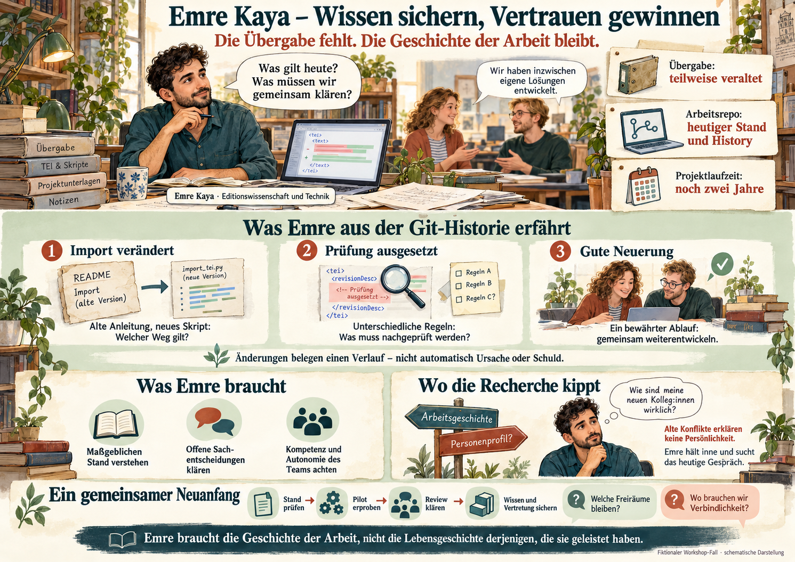

Übergabe
Ein damaliger Stand
Sorgfältig begonnen, unter schwierigen Bedingungen entstanden und inzwischen teilweise überholt.
01 Emre Kaya · neuer fachlich-technischer Mitarbeiter
Emre kennt den Editionsgegenstand. Er kann TEI prüfen, Transformationen entwickeln und mit Git arbeiten. Genau diese Verbindung von Fachwissen und Technik braucht das Projekt. Nur eine direkte Übergabe gibt es nicht.
„Was gilt heute? Was ist gefährdet? Mit wem muss ich sprechen?“
Die Vorgängerin war längere Zeit ungeplant krankgemeldet und ist inzwischen ausgeschieden. Ihre begonnene Dokumentation hilft, bildet aber spätere Änderungen nicht ab. Ausschreibung, kurze Restbefristung und Formalitäten haben die Wiederbesetzung verzögert. Nun bleiben zwei Jahre Projektlaufzeit.
Emre möchte rasch helfen. Was er künftig entscheiden und koordinieren soll, muss er mit Leitung und Team erst vereinbaren. Er ist nicht automatisch ihr Vorgesetzter.
Eine fiktionale Fallgeschichte. Personen, Projekte und Beispieldaten sind für diesen Fall gestaltet. Die dargestellten Befunde gelten innerhalb der Erzählung. Diese Offline-Einheit greift auf keine Repositorien zu.
Übergabe
Sorgfältig begonnen, unter schwierigen Bedingungen entstanden und inzwischen teilweise überholt.
Arbeitsrepository
Was maßgeblich ist und wie die Teile zusammenhängen, muss Emre zunächst prüfen.
Meilensteinplan
Handlungsspielraum und verbindliche Ziele. Die tatsächliche Verzögerung ist noch nicht bilanziert.
Eine gute Neueinstellung schließt eine Übergabelücke nicht automatisch. Git kann ein fehlendes Gespräch teilweise ersetzen.
Unterstützung und Autonomie
Beim ersten Rundgang zeigen ihm die Kolleg:innen ihre Abläufe. „Der Import läuft bei uns.“ „Die Korrekturen prüfen wir zu zweit.“ „Über die Freigabe entscheiden wir je nach Fall.“ Während der Vakanz haben sie Verantwortung übernommen. Eine neue Prüffolge funktioniert gut; andere Lösungen sind provisorisch geblieben.
Emre bittet um eine Vorführung an echten Arbeitspaketen. Er sieht Erfolge, aber auch divergierende Stände und aufgeschobene Prüfungen. Nicht alles begann mit dem Ausfall: Schon zuvor fehlten Vertretung und gemeinsam dokumentierte Entscheidungen.
Das Team freut sich auf Unterstützung. Zugleich fragt eine Kollegin: „Müssen wir jetzt wieder jeden Schritt genehmigen lassen?“ Emre möchte dazugehören. Er will weder gelungene Neuerungen zurückdrehen noch gemeinsame Verbindlichkeit einfach voraussetzen.
Emre braucht Orientierung, um verantwortlich handeln zu können. Das Team möchte seine erreichte Selbstständigkeit behalten. Das Projekt braucht verlässliche Qualität und geklärte Termine. Keine dieser Perspektiven erledigt die anderen.
Unterstützung wird gebraucht; erneute Kontrolle ist nicht automatisch erwünscht.
Drei fachlich nützliche historische Befunde
Emre vergleicht den dokumentierten Stand vor der Vakanz mit späteren Arbeitsständen und den heutigen Dateien. Im README steht noch das alte Importskript. In zwei Teilbeständen laufen inzwischen unterschiedliche Prüfungen. Eine Kollegin hat außerdem eine verbesserte Freigabefolge aufgebaut, die bislang nur ihr Bereich nutzt.
Er liest Diffs und prüft passende TEI-Beispiele mit den damaligen und heutigen Regeln. Nach einem Import wurden mehrere Dateien wiederholt korrigiert. War das eine fachliche Revision, eine technische Reparatur oder nur eine Formatänderung? Die Reihenfolge ist im Git sichtbar. Ursachen klärt er mit den Beteiligten, bevor er Verfahren ersetzt.
Das README nennt import-v1.py. Die aktuelle Pipeline verwendet import-v2.py mit veränderter TEI-Zuordnung.
Die Referenzprüfung ist in einem Teilbestand deaktiviert. Ein Grund oder Enddatum ist nicht dokumentiert.
Ein Bereich arbeitet mit unabhängiger Korrekturprüfung. Diese Verbesserung wurde noch nicht gemeinsam übernommen.
Die drei Fundstücke zeigen versionierte Konfiguration, Skripte und Dokumentation. Ein zusätzlich erhaltener Plattform-Review belegt beim dritten Fund eine Prüfung; er stammt aus einem bereitgestellten Plattformexport und ist kein Bestandteil jedes Git-Repositorien. Nicht gespeicherte Gespräche bleiben unbekannt. Commits und Zeilenänderungen sind keine Arbeitsstunden oder Schuldpunkte.
Git zeigt dokumentierte Zustandsänderungen. Für ihre fachliche Deutung braucht es Kontext und Menschen.
Ein erster Wechsel des Erkenntnisinteresses
Eine Freigaberegel wurde zunächst eingeführt, wieder entfernt und später nur teilweise übernommen. In einer alten Commitnachricht steht: „So war das nicht vereinbart.“ Eine weitere lautet: „Bitte nicht wieder ohne Prüfung übernehmen.“ Namen sind sichtbar, der damalige Gesprächskontext fehlt.
Emre versteht nun besser, warum die heutige Regel unvollständig ist. Er könnte aber auch anfangen zu zählen, wer Änderungen zurücknahm und wer sich angeblich querstellte. Das würde seine Frage verändern.
Er notiert stattdessen: Welche Sachentscheidung ist noch wirksam? Welche Prüfung fehlt heute? Wer ist jetzt dafür zuständig? Eine frühere Zuordnung kann zur Klärung einer Entscheidung nötig sein. Daraus folgt kein Urteil über die allgemeine Arbeitsleistung der Beteiligten.
Eine Spur / zwei Lesarten
Freigaberegel eingeführt → zurückgenommen → teilweise übernommen
„Warum fehlt heute eine verbindliche Prüfung?“ fragt nach dem weiterwirkenden Verfahren. „Wer war damals der Bremser?“ verwandelt einzelne Handlungen in ein Personenurteil. Ein gereizter Kommentar belegt seine Formulierung, nicht Charakter, Motivation oder heutige Vertrauenswürdigkeit. git blame zeigt die letzte sichtbare Änderung einer Zeile, keine persönliche Schuld.
Zustandsrekonstruktion ist nicht automatisch persönliche Schuldzuweisung.
Die menschliche Versuchung
Zwei Kollegen, die Emre heute freundlich begegnen, haben sich in der alten Freigabediskussion scharf widersprochen. Eine heute zurückhaltende Kollegin wirkte damals bestimmend. Fast unwillkürlich fragt er sich: Wer versteht sich hier mit wem? Was sollte ich wissen, um nicht zwischen die Fronten zu geraten?
Es wäre einfach, weitere Diskussionen nach Accounts zu durchsuchen. Emre merkt, wie seine fachliche Recherche zur sozialen Orientierung werden könnte. Er ist neu und möchte sich sicher fühlen. Aber eine Sammlung alter Konflikte würde ihm die anderen vorstellen, bevor sie selbst Gelegenheit dazu haben.
Er unterbricht diese Suche. Noch wirksame Sachentscheidungen will er verstehen. Die Kolleg:innen möchte er im heutigen gemeinsamen Arbeiten kennenlernen. Auch die privaten Gründe des früheren Ausfalls bleiben unbekannt; Pausen oder Kommentare liefern dafür keine tragfähigen Erklärungen.
Die Entscheidungsschwelle
Eine berechtigte Weiterung geht von der heutigen Arbeitsweise zu früheren Diskussionen, um eine weiterwirkende Sachentscheidung zu verstehen. Der Umschlag beginnt hier mit der systematischen Bündelung alter Konflikte nach Personen ohne konkrete fachliche Notwendigkeit – etwa um Loyalität, Charakter oder private Hintergründe abzuleiten.
Emre braucht die Geschichte der Arbeit, nicht die Lebensgeschichte derjenigen, die sie geleistet haben. Das verbietet keine Untersuchung organisatorischer Verantwortung.
Befunde gemeinsam prüfen
Emre stellt eine Prozesskarte vor: Importdokumentation aktualisieren, Prüfverfahren abgleichen, offene Freigabe entscheiden. Daneben steht die neue Korrekturprüfung als gelungenes Beispiel. Eine Liste persönlicher Fehler hat er nicht angelegt.
„Gut, dass wir endlich wieder einen Überblick bekommen“, sagt jemand. Eine Kollegin fragt: „Heißt das, dass du unsere Änderungen künftig ständig kontrollierst?“ Emre erklärt, welche konkrete Frage er aus welchen Dateien abgeleitet hat. Seine Rolle und die künftigen Entscheidungsrechte will er gemeinsam klären.
Das Gespräch ist nicht sofort harmonisch. Der Wunsch, frühere Konflikte ruhen zu lassen, ist verständlich. Dennoch müssen reale Qualitätsprobleme bearbeitet werden. Emre schlägt vor, am Verfahren anzusetzen und notwendige fachliche Verantwortung zu benennen, ohne das Team auf alte Streitigkeiten festzulegen.
Maßgeblicher Import, vollständige Prüfungen, offene Freigabe, Restarbeit und heutige Zuständigkeit. Gute lokale Lösungen sollen erhalten und gemeinsam geprüft werden.
Private Erklärungen, Charakterurteile oder ein vollständiges Wiederaufrollen persönlicher Konflikte. Vertrauen soll im gemeinsamen Arbeiten entstehen können.
Auch strukturelle Versäumnisse vor dem Ausfall müssen benannt werden: fehlende Vertretung und konzentriertes Wissen lassen sich organisatorisch verändern. Der Fall unterstellt keine schwerwiegende Pflichtverletzung. Eine solche konkrete Frage wäre gegebenenfalls gesondert über die zuständigen Wege zu behandeln.
Eine faire Retrospektive ist weder ein Tribunal noch die Verdrängung realer Probleme.
Ein begrenzter Pilot statt großer Neuordnung
Emre und das Team wählen einen kleinen Teilbestand. Gemeinsam verfolgen sie ihn von der Bearbeitung über fachliches Review bis zur Freigabe. Wo greifen die Prüfungen? Welche Entscheidungen können selbstständig bleiben? Wann muss jemand anderes hinzusehen?
Der Versuch wird nicht zum neuen Überwachungsinstrument. Er soll zeigen, was für verlässliche Übergaben nötig ist. Die Leitung klärt mit dem Team Rollen und Entscheidungsspielräume. Verfahren werden gemeinsam dokumentiert; für zentrale Aufgaben wird eine Vertretung vereinbart.
Die Verzögerung ist damit noch nicht beziffert, der Projektabschluss noch nicht gesichert. Aber die nächsten Wochen bekommen eine belastbare Richtung: heutige Risiken prüfen, einen Ablauf erproben und das dabei gewonnene Wissen zugänglich halten.
Git bewahrt technische Spuren. Tragfähige Zusammenarbeit entsteht aus gemeinsamer fachlicher Verständigung.
Workshop-Notizen
Material für die Tischdiskussion
Emre, das Team und der gemeinsame Neuanfang zwischen Wissenstransfer und persönlicher Neugier.
Illustrierte PNG-Übersichtsseite im Querformat · offline verfügbar.

Repository: versionierter Bestand von Dateien. Ein Arbeitsrepository enthält Bearbeitungsstände; ein Publikationsrepository bietet freigegebene Ergebnisse an. Ein Bestand kann beide Funktionen verbinden.
Git-Historie: erhaltene Dateistände und dokumentierte Änderungen. Sie enthält Spuren der Arbeit, keine vollständige Aufzeichnung des Arbeitsprozesses. Ein Commit dokumentiert eine Änderung; ein Diff zeigt Unterschiede zwischen Zuständen.
Prüfung, fachlicher Review und Freigabe: Eine Prüfung untersucht einen Befund. Ein fachlicher Review ist eine fachliche Durchsicht. Eine Freigabe ist eine Entscheidung über einen Stand. Technische Gültigkeit allein ist keine fachliche Freigabe.
Nach den beiden Emre-Kaya-Briefings, Version 0.1 vom 27. Oktober 2026, im Gestaltungsrahmen von Christine, Agenten und Dorothée. Emre ist ein menschlicher neuer Mitarbeiter, kein Agent und kein externer Gutachter. Die Repositoryfundstücke sind gestaltete Beispiele, keine realen Projektpassagen.
Die Gruppe soll eine nützliche Recherche, eine unterlassene personenbezogene Nachforschung und eine gemeinsam auszuhandelnde Maßnahme benennen können. Unterschiedliche Grenzziehungen bleiben diskutierbar. Keine persönliche Offenlegung ist erforderlich.
Version 1.1.0 · lokale Offline-Einheit. PNG und Illustration sind eingebettet. Keine externen Laufzeitdienste.